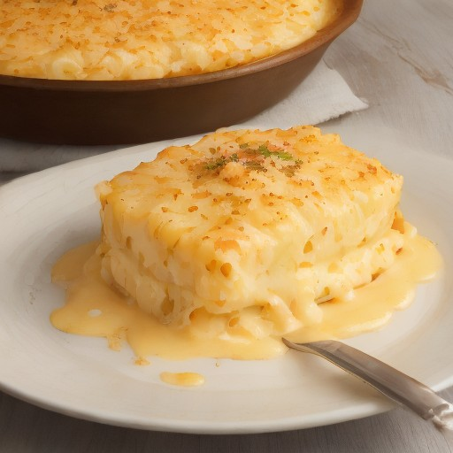

サイドディッシュ
悪魔のチーズポテトグラタン！サクサクポテトがクリーミーチーズソースに溶け込む、衝撃の美味しさ！

サクサクとしたポテトの食感とクリーミーなチーズソースが、まるで悪魔の舌を魅了する、究極のチーズグラタン！
💡 こんな時・こんな人におすすめ！
パーティーや家族で食べたい一品、ワインも合う！
📋 必要な材料（ポストイット風）
材料リスト 1
- じゃがいも1kg
- チーズ100g
- 牛乳50ml
材料リスト 2
- バター10g
- 塩コショウ適量
🍳 作り方ステップ
1
じゃがいもを1cm角に切り、180℃のオーブンで15分焼きます。
2
焼いたじゃがいもを電子レンジで1分加熱し、表面をカリッとさせる。
3
フライパンでバターを溶かし、チーズと牛乳を加え、溶けたチーズを混ぜながら加熱します。
4
焼いたポテトをチーズソースに混ぜ、塩コショウで味を調えます。